<title>商業菁英 No.002</title>
<link rel="preload" as="image" href="img/cover.jpg" fetchpriority="high">
<link rel="preconnect" href="https://fonts.googleapis.com">
<link rel="stylesheet" href="https://fonts.googleapis.com/css2?family=Noto+Serif+TC:wght@500;700;900&family=Noto+Sans+TC:wght@400;500;700&family=Cormorant+Garamond:wght@500;600&display=swap">
<style>
/* Layout: 12 portrait magazine pages stacked on a dark desk; same cream sheet + red/gold masthead language as No.001. Single deliberate print look. */
:root{
  --desk:#2a2220;
  --paper:#fbf6ec;
  --paper-2:#f3ead8;
  --ink:#2b2320;
  --ink-soft:#6a5b52;
  --red:#9c1c1c;
  --red-deep:#6e1010;
  --gold:#b88a2e;
  --gold-soft:#e6cf98;
  --rule:#d9c9a8;
  --hero:#2b1a12;
  --white:#ffffff;
  /* five-element swatches, taken from the product photos */
  --e-metal:#e9e1cf;
  --e-fire:#b8323f;
  --e-earth:#e0a72a;
  --e-water:#2f2b2b;
  --e-wood:#8aa44a;
  --f-display:"Noto Serif TC","Songti TC","PMingLiU",serif;
  --f-body:"Noto Sans TC","PingFang TC","Microsoft JhengHei",sans-serif;
  --f-latin:"Cormorant Garamond","Times New Roman",serif;
  color-scheme:light;
}
*{box-sizing:border-box}
body{background:var(--desk);color:var(--ink);font-family:var(--f-body);font-size:15px;line-height:1.85;margin:0;padding:32px 16px 64px}
.note{max-width:820px;margin:0 auto 20px;color:var(--gold-soft);font-size:13px;line-height:1.6;display:flex;gap:10px;align-items:flex-start}
.note b{color:var(--white);font-weight:500;white-space:nowrap}
.tbc{background:linear-gradient(transparent 62%,rgba(184,138,46,.28) 62%)}
.pages{display:flex;flex-direction:column;gap:36px;align-items:center}
.page{position:relative;width:100%;max-width:820px;background:var(--paper);box-shadow:0 18px 40px rgba(0,0,0,.45);padding:56px 60px 70px;overflow:hidden}
@media (min-width:860px){.page{min-height:1160px}}
@media (max-width:600px){.page{padding:36px 22px 60px}}
.folio{position:absolute;left:60px;right:60px;bottom:24px;display:flex;justify-content:space-between;font-size:11px;letter-spacing:.18em;color:var(--ink-soft);border-top:1px solid var(--rule);padding-top:10px}
@media (max-width:600px){.folio{left:22px;right:22px}}
.folio .pn{font-family:var(--f-latin);font-size:15px;color:var(--red);letter-spacing:0}
.kicker{display:inline-flex;align-items:stretch;font-family:var(--f-display);font-weight:700;font-size:14px;letter-spacing:.12em}
.kicker span:first-child{background:var(--red);color:var(--white);padding:4px 12px}
.kicker span+span{border:1px solid var(--red);color:var(--red);padding:3px 12px}
h1,h2,h3{font-family:var(--f-display);text-wrap:balance;margin:0;color:var(--ink)}
h2{font-size:clamp(28px,5vw,44px);font-weight:900;line-height:1.3;margin-top:18px}
h2 em{font-style:normal;color:var(--red)}
.nowrap{white-space:nowrap;display:inline-block}
h3{font-size:20px;font-weight:700;line-height:1.5}
p{margin:0}
.lede{font-family:var(--f-display);font-size:17px;line-height:1.9;color:var(--ink-soft);margin-top:18px;max-width:40em}
.rule-gold{height:2px;background:linear-gradient(90deg,var(--gold),var(--gold-soft) 60%,transparent);margin:26px 0}
.cols{column-count:2;column-gap:36px;column-rule:1px solid var(--rule)}
@media (max-width:640px){.cols{column-count:1}}
.cols p{margin-bottom:1em;text-align:justify}
.cols p:first-child::first-letter{font-family:var(--f-display);font-weight:900;font-size:3.4em;float:left;line-height:1;margin:.05em .12em 0 0;color:var(--red)}

/* figures */
figure{margin:0}
.fig img{display:block;width:100%;height:auto;border:6px solid var(--white);box-shadow:0 0 0 1px var(--rule)}
.fig figcaption{font-size:12.5px;color:var(--ink-soft);margin-top:8px;letter-spacing:.04em}
.fig figcaption b{color:var(--red);font-weight:700;margin-right:6px}
.split{display:grid;grid-template-columns:minmax(0,1fr) minmax(0,1fr);gap:32px;align-items:start;margin-top:26px}
@media (max-width:640px){.split{grid-template-columns:1fr}}
.split>*{min-width:0}

/* tables */
.tbl{overflow-x:auto;margin-top:22px}
table{border-collapse:collapse;width:100%;font-size:14px;line-height:1.6}
th{font-family:var(--f-display);font-weight:700;color:var(--white);background:var(--red);text-align:left;padding:9px 12px;white-space:nowrap}
td{padding:10px 12px;border-bottom:1px solid var(--rule);vertical-align:top}
tr:nth-child(even) td{background:var(--paper-2)}
td.el{font-family:var(--f-display);font-weight:900;white-space:nowrap}
.dot{display:inline-block;width:12px;height:12px;border-radius:50%;margin-right:8px;vertical-align:-1px;box-shadow:0 0 0 1px rgba(0,0,0,.18)}

/* ============ COVER ============ */
.cover{padding:0;display:block}
@media (min-width:860px){.page.cover{min-height:0}}
.cover{position:relative;container-type:inline-size}
.cover-issue{position:absolute;left:86.29%;width:11.69%;top:4.545%;display:flex;flex-direction:column;align-items:center;font-family:var(--f-latin);color:var(--ink);line-height:1;pointer-events:none}
.cover-issue span{display:block}
.ci-y{font-size:3.613cqw;font-weight:600}
.ci-m{font-size:8.927cqw;font-weight:600;color:var(--red-deep);margin-top:.2125cqw}
.ci-s{font-size:1.7cqw;letter-spacing:.06em;margin-top:.6376cqw}
.ci-no{font-size:2.444cqw;font-weight:600;margin-top:1.2752cqw}
.cover-img{display:block;width:100%;height:auto;aspect-ratio:941/1672}
.mast{padding:22px 40px 14px;display:grid;grid-template-columns:1fr auto;gap:8px 24px;align-items:end}
@media (max-width:600px){.mast{padding:18px 18px 12px;grid-template-columns:1fr}}
.mast-top{grid-column:1/-1;display:flex;justify-content:space-between;gap:12px;flex-wrap:wrap;font-size:13px;letter-spacing:.2em;color:var(--ink);font-weight:500;border-bottom:1px solid var(--ink);padding-bottom:8px}
.mast-top .en{font-family:var(--f-latin);letter-spacing:.32em;font-size:13px;text-align:right;line-height:1.2}
.mast-title{font-family:var(--f-display);font-weight:900;font-size:clamp(64px,16vw,138px);line-height:1;letter-spacing:.02em;color:var(--red);white-space:nowrap}
.mast-title .g{color:var(--gold)}
.mast-issue{border-left:1px solid var(--ink);padding-left:20px;text-align:center;font-family:var(--f-latin);line-height:1.1;display:grid;gap:4px;justify-items:center}
@media (max-width:600px){.mast-issue{border-left:0;padding-left:0;grid-auto-flow:column;align-items:baseline;gap:14px;justify-content:start}}
.mast-issue .y{font-size:28px;font-weight:600}
.mast-issue .m{font-size:64px;font-weight:600;color:var(--red-deep)}
.mast-issue .s{font-size:13px;letter-spacing:.1em}
.mast-issue .no{font-size:19px;font-weight:600}
.mast-issue .tag{background:var(--red);color:var(--white);font-family:var(--f-display);font-weight:700;font-size:15px;padding:4px 12px;margin-top:4px}
.mast-row{grid-column:1/-1;display:flex;justify-content:space-around;font-family:var(--f-display);font-weight:700;letter-spacing:.5em;font-size:14px;border-top:1px solid var(--ink);border-bottom:1px solid var(--ink);padding:5px 0;flex-wrap:wrap}
.mast-row i{font-style:normal;color:var(--gold);letter-spacing:0}

.hero{position:relative;background:var(--hero);color:var(--white);display:grid;grid-template-columns:minmax(0,1.15fr) minmax(0,.85fr);min-height:560px}
@media (max-width:640px){.hero{grid-template-columns:1fr}}
.hero-img{position:absolute;inset:0;background:url("img/hero.jpg") center/cover no-repeat;opacity:.5}
.hero::after{content:"";position:absolute;inset:0;background:linear-gradient(90deg,rgba(43,26,18,.96) 0%,rgba(43,26,18,.75) 52%,rgba(43,26,18,.15) 100%)}
.hero-copy{position:relative;z-index:1;padding:36px 0 36px 40px;display:flex;flex-direction:column;gap:14px}
@media (max-width:600px){.hero-copy{padding:28px 18px}}
.hero .kicker span:first-child{background:var(--gold);color:var(--hero)}
.hero .kicker span+span{border-color:var(--gold);color:var(--gold-soft)}
.hero-big{font-family:var(--f-display);font-weight:900;font-size:clamp(52px,10vw,88px);white-space:nowrap;line-height:1;color:var(--gold-soft);letter-spacing:.04em;text-shadow:0 4px 18px rgba(0,0,0,.5)}
.hero-sub{font-family:var(--f-display);font-weight:900;font-size:clamp(24px,4.4vw,36px);white-space:nowrap;line-height:1.2}
.hero-line{font-family:var(--f-display);font-weight:700;font-size:clamp(18px,3vw,23px);line-height:1.6;border-bottom:1px solid rgba(230,207,152,.5);padding-bottom:12px}
.hero-line em{font-style:normal;color:var(--gold-soft)}
.hero-tags{font-family:var(--f-display);font-weight:700;font-size:17px;letter-spacing:.06em}
.hero-tags span{color:var(--gold)}
.swatches{display:flex;gap:10px;margin-top:6px}
.swatches span{width:30px;height:30px;border-radius:50%;border:2px solid rgba(255,255,255,.7)}
.hero-man{position:relative;z-index:1;align-self:end;background:url("img/portrait.jpg") center top/cover no-repeat;aspect-ratio:3/4.4;max-width:100%;margin:28px 28px 0 0;border:6px solid var(--white);border-bottom:0}
@media (max-width:640px){.hero-man{margin:0 18px;width:70%;justify-self:end}}
.hero-strip{position:relative;z-index:1;grid-column:1/-1;background:url("img/fivebuns.jpg") center/cover no-repeat;height:120px;border-top:3px solid var(--gold)}

.focus{padding:22px 40px 26px;background:var(--paper)}
@media (max-width:600px){.focus{padding:18px}}
.focus-head{display:inline-block;background:var(--red);color:var(--white);font-family:var(--f-display);font-weight:700;font-size:18px;padding:4px 26px 4px 14px;clip-path:polygon(0 0,calc(100% - 14px) 0,100% 50%,calc(100% - 14px) 100%,0 100%)}
.focus-grid{display:grid;grid-template-columns:repeat(4,minmax(0,1fr));gap:14px;margin-top:14px}
@media (max-width:680px){.focus-grid{grid-template-columns:repeat(2,minmax(0,1fr))}}
.focus-grid a{display:flex;flex-direction:column;gap:4px;color:inherit;text-decoration:none;border-right:1px solid var(--rule);padding-right:12px}
.focus-grid a:last-child{border-right:0}
.focus-grid a:focus-visible{outline:2px solid var(--gold);outline-offset:3px}
.focus-grid .n{font-family:var(--f-latin);font-size:34px;font-weight:600;color:var(--red);line-height:1}
.focus-grid h3{font-size:16.5px;line-height:1.35}
.focus-grid p{font-size:12.5px;color:var(--ink-soft);line-height:1.55}
.focus-grid .ph{margin-top:auto;aspect-ratio:4/3;background-size:cover;background-position:center;border:4px solid var(--white);box-shadow:0 0 0 1px var(--rule)}
.cover-bar{background:var(--red-deep);color:var(--white);display:grid;grid-template-columns:repeat(4,minmax(0,1fr));padding:14px 30px;gap:10px}
@media (max-width:600px){.cover-bar{grid-template-columns:repeat(2,minmax(0,1fr));padding:14px 18px}}
.cover-bar div{display:flex;gap:10px;align-items:center;font-size:12.5px;line-height:1.4;color:var(--gold-soft)}
.cover-bar svg{flex:none;width:30px;height:30px;stroke:var(--gold-soft);fill:none;stroke-width:1.6}
.cover-bar b{display:block;color:var(--white);font-family:var(--f-display);font-size:15px}

/* contents */
.toc{display:grid;gap:0;margin-top:24px}
.toc a{display:grid;grid-template-columns:64px 1fr auto;gap:18px;align-items:baseline;padding:13px 0;border-bottom:1px solid var(--rule);color:inherit;text-decoration:none}
.toc a:hover h3{color:var(--red)}
.toc a:focus-visible{outline:2px solid var(--gold);outline-offset:4px}
.toc .no{font-family:var(--f-latin);font-size:36px;color:var(--red);line-height:1}
.toc h3{font-size:18px}
.toc p{font-size:13.5px;color:var(--ink-soft);line-height:1.6;margin-top:2px}
.toc .pg{font-family:var(--f-latin);font-size:18px;color:var(--gold)}
.editor{margin-top:30px;background:var(--paper-2);padding:24px 28px;display:grid;gap:10px}
.editor h3{font-size:17px;color:var(--red)}
.editor .sig{text-align:right;font-family:var(--f-display);color:var(--ink-soft);font-size:14px}

/* profile */
.profile{display:grid;grid-template-columns:minmax(0,1fr) minmax(0,1.25fr);gap:40px;margin-top:30px}
@media (max-width:680px){.profile{grid-template-columns:1fr}}
.portrait{aspect-ratio:3/4;max-width:100%;background:url("img/portrait2.jpg") center top/cover no-repeat;border:6px solid var(--white);box-shadow:0 0 0 1px var(--rule)}
.name{font-family:var(--f-display);font-size:40px;font-weight:900;letter-spacing:.08em;margin-top:6px}
.name small{display:block;font-size:14px;font-weight:500;letter-spacing:.3em;color:var(--gold);margin-bottom:4px}
.facts{display:grid;grid-template-columns:auto 1fr;gap:10px 18px;margin-top:20px;font-size:14px}
.facts dt{color:var(--red);font-weight:700;letter-spacing:.1em}
.facts dd{margin:0}
.facts ul{margin:0;padding:0;list-style:none;display:grid;gap:2px}
.biz{display:grid;grid-template-columns:repeat(4,minmax(0,1fr));gap:0;margin-top:14px;border-top:3px solid var(--red)}
@media (max-width:640px){.biz{grid-template-columns:repeat(2,minmax(0,1fr))}}
.biz>div{padding:14px 14px 4px 0;display:grid;gap:4px;align-content:start}
.biz b{font-family:var(--f-display);font-size:17px;color:var(--red)}
.biz p{font-size:13.5px;line-height:1.7;color:var(--ink)}

/* five-element wheel page */
.elements{display:grid;grid-template-columns:repeat(5,minmax(0,1fr));gap:10px;margin-top:26px}
@media (max-width:640px){.elements{grid-template-columns:repeat(2,minmax(0,1fr))}}
.el-card{background:var(--paper-2);border-top:6px solid var(--c);padding:14px 12px 16px;display:grid;gap:4px;align-content:start;text-align:center}
.el-card .big{font-family:var(--f-display);font-weight:900;font-size:30px;line-height:1.2}
.el-card .nm{font-family:var(--f-display);font-weight:700;font-size:14.5px;color:var(--red)}
.el-card p{font-size:12.5px;color:var(--ink-soft);line-height:1.6}
.three{display:grid;grid-template-columns:repeat(3,minmax(0,1fr));gap:20px;margin-top:28px}
@media (max-width:680px){.three{grid-template-columns:1fr}}
.three>div{border-top:2px solid var(--gold);padding-top:12px}
.three h3{font-size:17px;color:var(--red);margin-bottom:6px}
.three p{font-size:14px;text-align:justify}

/* interview */
.qa{display:grid;gap:22px;margin-top:8px}
.q{font-family:var(--f-display);font-weight:700;font-size:16.5px;color:var(--red);display:flex;gap:10px}
.q::before{content:"Q";font-family:var(--f-latin);font-size:24px;line-height:1;color:var(--gold)}
.a{padding-left:24px;text-align:justify}
.a strong{color:var(--ink);font-weight:700}
.pull{margin:30px 0;padding:24px 0;border-block:2px solid var(--red);font-family:var(--f-display);font-size:clamp(20px,3.2vw,26px);font-weight:700;line-height:1.6;color:var(--red-deep);text-align:center;text-wrap:balance}
.pull cite{display:block;font-style:normal;font-size:13px;letter-spacing:.2em;color:var(--gold);margin-top:10px;font-weight:500}
.inset{float:right;width:44%;margin:4px 0 16px 26px}
@media (max-width:640px){.inset{float:none;width:100%;margin:0 0 18px}}

/* product lines */
.lines{display:grid;grid-template-columns:repeat(3,minmax(0,1fr));gap:20px;margin-top:28px}
@media (max-width:680px){.lines{grid-template-columns:1fr}}
.line{border-top:4px solid var(--red);background:var(--paper-2);display:grid;align-content:start}
.line img{display:block;width:100%;aspect-ratio:4/3;object-fit:cover}
.line .body{padding:16px 18px 20px;display:grid;gap:8px}
.line .tag{font-size:12px;letter-spacing:.2em;color:var(--gold);font-weight:700}
.line ul{margin:0;padding-left:1.1em;font-size:14px;line-height:1.75}
.line p{font-size:14px}
.box{margin-top:28px;border:1px solid var(--gold);padding:20px 24px;font-size:14px}
.box h3{font-size:16px;color:var(--red);margin-bottom:6px}
.box ol{margin:6px 0 0;padding-left:1.3em;display:grid;gap:6px}

/* scenes */
.scenes{display:grid;grid-template-columns:repeat(3,minmax(0,1fr));gap:18px 20px;margin-top:26px}
@media (max-width:680px){.scenes{grid-template-columns:repeat(2,minmax(0,1fr))}}
@media (max-width:420px){.scenes{grid-template-columns:1fr}}
.scene{display:grid;gap:6px;align-content:start}
.scene img{display:block;width:100%;aspect-ratio:16/9;object-fit:cover;border:4px solid var(--white);box-shadow:0 0 0 1px var(--rule)}
.scene h3{font-size:16.5px;display:flex;gap:8px;align-items:baseline}
.scene h3 span{font-family:var(--f-latin);color:var(--red);font-size:22px}
.scene .need{font-size:12px;letter-spacing:.12em;color:var(--gold);font-weight:700}
.scene p{font-size:13.5px;line-height:1.7;color:var(--ink)}

/* value chain */
.chain{margin-top:30px;overflow-x:auto}
.chain ol{list-style:none;margin:0;padding:0;display:grid;grid-template-columns:repeat(4,minmax(130px,1fr));min-width:560px}
.chain li{position:relative;padding:14px 14px 14px 26px;background:var(--red);color:var(--white);font-size:13px;line-height:1.5;clip-path:polygon(0 0,calc(100% - 14px) 0,100% 50%,calc(100% - 14px) 100%,0 100%,14px 50%)}
.chain li:nth-child(even){background:var(--red-deep)}
.chain li b{display:block;font-family:var(--f-display);font-size:15px;color:var(--gold-soft)}
.tiers{display:grid;grid-template-columns:repeat(3,minmax(0,1fr));gap:0;margin-top:22px;border:1px solid var(--gold)}
@media (max-width:640px){.tiers{grid-template-columns:1fr}}
.tiers>div{padding:18px 18px 20px;display:grid;gap:6px;align-content:start;border-right:1px solid var(--rule)}
.tiers>div:last-child{border-right:0;background:var(--paper-2)}
.tiers .lv{font-family:var(--f-latin);font-size:13px;letter-spacing:.24em;color:var(--gold);font-weight:600}
.tiers h3{font-size:17px}
.tiers p{font-size:13.5px;line-height:1.7}

/* compliance */
.dodont{display:grid;grid-template-columns:minmax(0,1fr) minmax(0,1fr);margin-top:24px;border:1px solid var(--rule)}
@media (max-width:560px){.dodont{grid-template-columns:1fr}}
.dodont>div{padding:18px 20px}
.dodont h3{font-size:16px;margin-bottom:8px;display:flex;align-items:center;gap:8px}
.dodont .ok h3{color:var(--e-wood)}
.dodont .no{background:var(--paper-2)}
.dodont .no h3{color:var(--red)}
.dodont ul{margin:0;padding:0;list-style:none;display:grid;gap:6px;font-size:14.5px}
.dodont .ok li::before{content:"○";color:var(--e-wood);margin-right:8px;font-weight:700}
.dodont .no li::before{content:"✕";color:var(--red);margin-right:8px;font-weight:700}
.dodont .no li{text-decoration:line-through;text-decoration-color:rgba(156,28,28,.45)}
.warm{margin-top:24px;display:flex;gap:16px;align-items:flex-start;background:var(--paper-2);padding:18px 22px;border-left:4px solid var(--gold)}
.warm b{font-family:var(--f-display);color:var(--red);font-size:17px;white-space:nowrap}
.warm p{font-size:14px}

.advice{margin-top:30px;background:var(--red);color:var(--white);padding:26px 30px}
.advice h3{color:var(--gold-soft);font-size:18px}
.advice ol{margin:12px 0 0;padding-left:1.3em;display:grid;gap:8px}
.check{list-style:none;padding:0;margin:12px 0 0;display:grid;gap:8px}
.check li{display:flex;gap:10px}
.check li::before{content:"";flex:none;width:16px;height:16px;border:2px solid var(--gold-soft);margin-top:5px}

/* back */
.back{background:var(--red-deep);color:#f6ead2;display:flex;flex-direction:column}
.back h2{color:var(--white)}
.back .lede{color:var(--gold-soft)}
.back .folio{color:var(--gold-soft);border-color:rgba(230,207,152,.3)}
.back .folio .pn{color:var(--gold-soft)}
.back .fig img{border-color:var(--gold-soft);box-shadow:none}
.next{margin-top:30px;display:grid;grid-template-columns:repeat(3,minmax(0,1fr));gap:18px}
@media (max-width:640px){.next{grid-template-columns:1fr}}
.next div{border:1px solid rgba(230,207,152,.45);padding:18px}
.next b{display:block;font-family:var(--f-display);color:var(--white);font-size:16px;margin-bottom:6px}
.next p{font-size:13.5px;line-height:1.7}
.colophon{margin-top:auto;padding-top:36px;display:grid;grid-template-columns:repeat(2,minmax(0,1fr));gap:8px 30px;font-size:12.5px;color:var(--gold-soft)}
@media (max-width:640px){.colophon{grid-template-columns:1fr}}
.masthead-mini{font-family:var(--f-display);font-weight:900;font-size:56px;letter-spacing:.1em;color:var(--white);line-height:1.1;margin-top:36px}
.masthead-mini small{display:block;font-family:var(--f-latin);font-size:14px;letter-spacing:.4em;color:var(--gold-soft);font-weight:500}
.disclaimer{font-size:11.5px;margin-top:22px;line-height:1.6;color:var(--gold-soft)}

/* phone refinements */
@media (max-width:640px){
  .el-card:last-child{grid-column:1/-1}
  .chain{overflow:visible}
  .chain ol{grid-template-columns:1fr;min-width:0;gap:4px}
  .chain li{clip-path:polygon(0 0,100% 0,100% calc(100% - 10px),50% 100%,0 calc(100% - 10px));padding:12px 16px 20px}
  .page{padding:32px 18px 60px}
  .folio{left:18px;right:18px}
  .page.cover{padding:0}
}
</style>


<main class="pages">

<!-- P1 Cover -->
<section class="page cover" aria-label="封面">
  
  <div class="cover-issue" aria-label="期別">
    <span class="ci-y">2026</span><span class="ci-m">10</span><span class="ci-s">OCT. 2026</span><span class="ci-no">No.002</span>
  </div>
</section>

<!-- P2 Contents -->
<section class="page" id="p2">
  <div class="kicker"><span>本期目錄</span><span>CONTENTS</span></div>
  <h2>五種顏色，<em>一門生意</em></h2>
  <p class="lede">繼上期〈人參走進現代生活〉之後，陳辭修博士這次談的是更日常的東西：一包天然穀物預拌粉。白、紅、黃、黑、綠五色，蒸成饅頭、烤成麵包、壓成麵條，走進六種不同的商業場景。</p>
  <nav class="toc" aria-label="本期內容">
    <a href="#p3"><span class="no">01</span><div><h3>封面人物｜陳辭修博士</h3><p>文化是入口，標準化才是生意</p></div><span class="pg">P.03</span></a>
    <a href="#p4"><span class="no">02</span><div><h3>產業趨勢｜五行五色：古老智慧的現代語言</h3><p>為什麼「五色」是最好懂的產品故事</p></div><span class="pg">P.04</span></a>
    <a href="#p5"><span class="no">03</span><div><h3>案例解析｜五種穀物風味解析</h3><p>約二十種天然原料，五款配方的定位</p></div><span class="pg">P.05</span></a>
    <a href="#p6"><span class="no">04</span><div><h3>菁英專訪（上）從養生到好吃</h3><p>年輕人、小吃店與禮盒市場</p></div><span class="pg">P.06</span></a>
    <a href="#p7"><span class="no">05</span><div><h3>案例解析｜一粉三用</h3><p>饅頭、麵包、麵條三條產品線的設計邏輯</p></div><span class="pg">P.07</span></a>
    <a href="#p8"><span class="no">06</span><div><h3>專題企劃｜六大商業場景</h3><p>同一包粉，六種客戶，六種購買理由</p></div><span class="pg">P.08</span></a>
    <a href="#p9"><span class="no">07</span><div><h3>專題企劃｜商業模式與定價</h3><p>B2B × B2C 雙軌、三層價格、通路順序</p></div><span class="pg">P.09</span></a>
    <a href="#p10"><span class="no">08</span><div><h3>菁英觀點｜養生不等於功效</h3><p>說好故事，也要守住界線</p></div><span class="pg">P.10</span></a>
    <a href="#p11"><span class="no">09</span><div><h3>菁英專訪（下）給經營者的建言</h3><p>護城河、色差、代工與異業合作</p></div><span class="pg">P.11</span></a>
    <a href="#p12"><span class="no">10</span><div><h3>編輯部｜下期預告</h3><p>讓天然穀物走進日常餐桌</p></div><span class="pg">P.12</span></a>
  </nav>
  <div class="editor">
    <h3>編者的話</h3>
    <p>「五行」是華人最熟悉的生活語彙之一，但多數人對它的理解停在說得出來、做不出來。陳辭修博士把它變成一個標準化、可量產、可進通路、可送禮的產品，而且刻意不談療效，只談原料、風味與顏色。這一期想留給讀者的，是一個把文化資產翻譯成商業模式的完整案例。</p>
    <p class="sig">《商業菁英》總編輯</p>
  </div>
  <div class="folio"><span>商業菁英 BUSINESS ELITE · OCT. 2026</span><span class="pn">02</span></div>
</section>

<!-- P3 Profile -->
<section class="page" id="p3">
  <div class="kicker"><span>封面人物</span><span>五行穀物商業應用</span></div>
  <div class="profile">
    <div class="portrait" role="img" aria-label="陳辭修博士肖像"></div>
    <div>
      <p class="name"><small>COVER STORY · BENSON CHEN</small>陳辭修 博士</p>
      <p class="lede" style="margin-top:10px">「這五個饅頭用的是同一套製程，差別只在粉。同樣的粉，明天可以是吐司，後天可以是一碗麵。」</p>
      <dl class="facts">
        <dt>現任</dt><dd><ul><li>臺北醫學大學 教授</li><li>財團法人皮膚科學發展文教基金會 董事</li></ul></dd>
        <dt>學歷</dt><dd><ul><li>交通大學 科技管理研究所 博士</li><li>臺灣科技大學 EMBA</li><li>中國醫藥學院 藥學系 學士</li></ul></dd>
        <dt>經歷</dt><dd><ul><li>順天本草股份有限公司 總經理</li><li>華健醫藥生技公司 總經理</li><li>荷商史克美占 公共事務部處長兼發言人</li><li>台灣諾華股份有限公司 公共事務經理</li></ul></dd>
        <dt>著作</dt><dd>《每日一句正能量》、《做，就對了！》、《衝突危機管理》等</dd>
      </dl>
    </div>
  </div>
  <div class="rule-gold"></div>
  <div class="cols">
    <p>陳辭修博士的履歷橫跨三個世界：藥學出身，在跨國藥廠諾華、史克美占負責公共事務與發言；轉任順天本草、華健醫藥生技總經理，經營中草藥與生技事業；再取得交通大學科技管理博士，進入臺北醫學大學任教。藥學、產業、管理，三條路在他身上交會。</p>
    <p>在北醫任教期間，他帶入藥材檢驗與藥材條碼溯源的研究計畫，也輔導傳統藥局以漢方調理走向複合式經營。他的觀察是：好東西常常輸在「說不清楚、做不標準」。</p>
    <p>這套方法後來成了「膳行天下」與「太和博士」品牌的骨架：把適合食用的食材做成色、香、味俱全的膳食商品，以出版、課程、產品、複合加盟四條線同步推進。「五行五色」預拌粉，就是這套思路延伸到日常麵食的最新作品。</p>
    <p>初見他時，桌上擺著一籠剛蒸好的饅頭：奶白、磚紅、暖黃、深灰黑、淺綠。他說，這一籠就是他對「養生產品只有故事、沒有口味、宣傳過頭」三個老問題的回答。用他自己的話說：<b>文化是入口，標準化才是生意。</b></p>
  </div>
  <h3 style="margin-top:8px">陳博士的事業版圖</h3>
  <div class="biz">
    <div><b>出版</b><p>《每日一句正能量》等著作與藥膳系列，共同出版、版稅分潤。</p></div>
    <div><b>課程</b><p>創新的商業模式、人生十大管理，培訓「膳食力美療師」與種子幹部。</p></div>
    <div><b>產品</b><p>藥膳調理包、燉包、茶包與手搖飲，以及本期的五行五色預拌粉。</p></div>
    <div><b>複合加盟</b><p>中藥行與藥局轉型輔導、「膳行天下」加盟、「太和」品牌授權。</p></div>
  </div>
  <div class="folio"><span>封面人物 COVER STORY</span><span class="pn">03</span></div>
</section>

<!-- P4 Five elements -->
<section class="page" id="p4">
  <div class="kicker"><span>產業趨勢</span><span>五行五色</span></div>
  <h2>古老智慧的<em>現代語言</em></h2>
  <p class="lede">五行最大的商業價值不在玄學，而在它是一套「不用解釋就懂」的分類系統。金白、火赤、土黃、水黑、木青，華人消費者看一眼就有聯想。</p>
  <div class="elements">
    <div class="el-card" style="--c:var(--e-metal)"><span class="big">白·金</span><span class="nm">四神風味</span><p>淡雅穀香<br>自然奶白</p></div>
    <div class="el-card" style="--c:var(--e-fire)"><span class="big">紅·火</span><span class="nm">五紅風味</span><p>清甜爽口<br>自然磚紅</p></div>
    <div class="el-card" style="--c:var(--e-earth)"><span class="big">黃·土</span><span class="nm">南瓜穀物風味</span><p>香甜柔和<br>自然暖黃</p></div>
    <div class="el-card" style="--c:var(--e-water)"><span class="big">黑·水</span><span class="nm">五黑風味</span><p>濃郁穀香<br>自然深灰黑</p></div>
    <div class="el-card" style="--c:var(--e-wood)"><span class="big">綠·木</span><span class="nm">昆布綠豆風味</span><p>淡清香味<br>自然淺綠</p></div>
  </div>
  <div class="rule-gold"></div>
  <h3>五色做為產品概念的三個優勢</h3>
  <div class="three">
    <div><h3>認知成本極低</h3><p>看到「紅·火」、「黑·水」就能產生聯想，品牌幾乎不必花錢教育市場。傳統的「餐桌五色」與現代的「彩虹飲食」，說的都是吃得多元。</p></div>
    <div><h3>視覺即差異化</h3><p>五種顏色的饅頭、吐司、麵條放在一起，就是最好的商品照。在社群時代，「好拍」本身就是行銷力。</p></div>
    <div><h3>天生的組合邏輯</h3><p>五入一盒、五色一套，禮盒與組合包的設計順理成章，消費者也會想「收集齊全」，客單價自然拉高。</p></div>
  </div>
  <figure class="fig" style="margin-top:30px">
    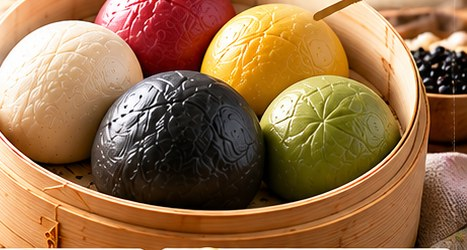
    <figcaption><b>從養生到好吃</b>過去講五行養生，講的是「對身體好」；今天講五行五色，講的是吃得多元、吃得開心。</figcaption>
  </figure>
  <div class="folio"><span>產業趨勢 INDUSTRY TRENDS</span><span class="pn">04</span></div>
</section>

<!-- P5 Flavours -->
<section class="page" id="p5">
  <div class="kicker"><span>案例解析</span><span>五種穀物風味</span></div>
  <h2>顏色是結果，<em>不是目的</em></h2>
  <p class="lede">五款配方共使用約二十種天然穀物與蔬果原料，經低溫烘焙、超微粉碎後調成預拌粉，不添加人工色素。</p>
  <figure class="fig" style="margin-top:24px">
    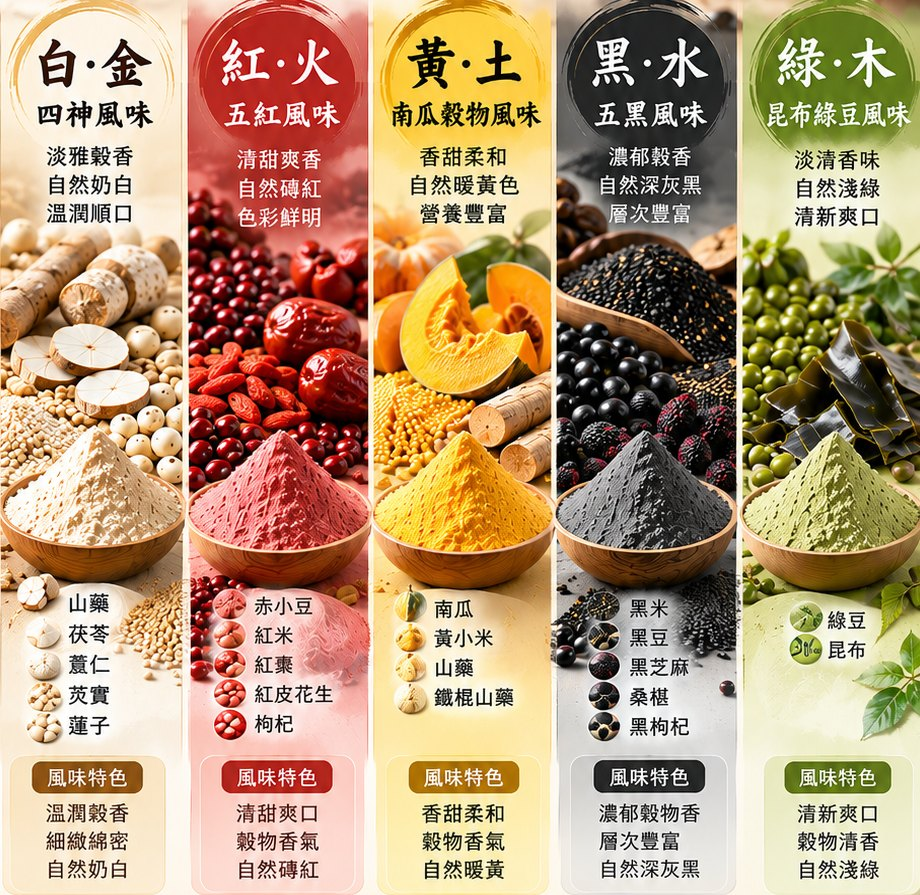
    <figcaption><b>原料與粉體</b>由左至右：白·金、紅·火、黃·土、黑·水、綠·木。</figcaption>
  </figure>
  <div class="tbl">
    <table>
      <thead><tr><th>配方</th><th>主要原料</th><th>商品角色</th></tr></thead>
      <tbody>
        <tr><td class="el"><span class="dot" style="background:var(--e-earth)"></span>黃·土</td><td>南瓜、黃小米、山藥、鐵棍山藥</td><td><b>先發</b>：香甜最好入口，新客與兒童早餐主力</td></tr>
        <tr><td class="el"><span class="dot" style="background:var(--e-metal)"></span>白·金</td><td>山藥、茯苓、薏仁、芡實、蓮子</td><td><b>守門員</b>：「四神湯」的台灣味記憶，日常基本款</td></tr>
        <tr><td class="el"><span class="dot" style="background:var(--e-fire)"></span>紅·火</td><td>赤小豆、紅米、紅棗、紅皮花生、枸杞</td><td><b>節慶王牌</b>：喜慶色，年節、婚嫁、壽宴禮盒首選</td></tr>
        <tr><td class="el"><span class="dot" style="background:var(--e-water)"></span>黑·水</td><td>黑米、黑豆、黑芝麻、桑椹、黑枸杞</td><td><b>話題製造機</b>：視覺衝擊最強，社群最常被分享</td></tr>
        <tr><td class="el"><span class="dot" style="background:var(--e-wood)"></span>綠·木</td><td>綠豆、昆布</td><td><b>季節限定</b>：清新爽口，搭配夏季涼麵菜單</td></tr>
      </tbody>
    </table>
  </div>
  <div class="box">
    <h3>原料管理的三個細節</h3>
    <ol>
      <li><b>原料資格</b>：茯苓、芡實、蓮子、枸杞、桑椹等可能屬食藥兩用或有使用限制的原料，需依銷售地法規逐項確認（台灣可參考食藥署「可供食品使用原料彙整一覽表」）。</li>
      <li><b>過敏原標示</b>：紅配方含花生，黑配方含芝麻與黑豆（大豆），麵粉基底含麩質穀物，包裝與菜單都應清楚揭露。</li>
      <li><b>批次一致性</b>：天然原料顏色會隨產區、季節變化，需以標準化配方與批次檢驗控制色差。</li>
    </ol>
  </div>
  <div class="folio"><span>案例解析 CASE STUDY</span><span class="pn">05</span></div>
</section>

<!-- P6 Interview 1 -->
<section class="page" id="p6">
  <div class="kicker"><span>菁英專訪</span><span>從養生到好吃</span></div>
  <h2>年輕人買的是<em class="nowrap">好看、好吃、有故事</em></h2>
  <p class="lede">五行聽起來很傳統，誰會買單？陳辭修博士談年輕消費者、小吃店老闆與禮盒市場。</p>
  <div class="rule-gold"></div>
  <figure class="fig inset">
    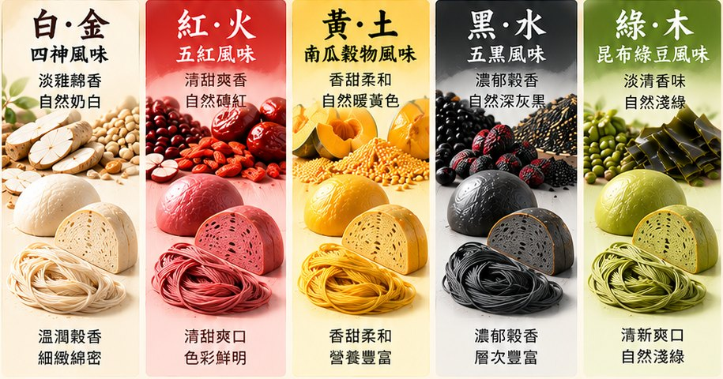
    <figcaption><b>五種風味</b>同一配方可做饅頭、麵包、麵條。</figcaption>
  </figure>
  <div class="qa">
    <div><p class="q">五行養生聽起來很傳統，年輕消費者會買單嗎？</p>
    <p class="a">年輕人不一定在意五行，但在意「好不好看、好不好吃、有沒有故事」。五色饅頭在社群上的第一眼是<strong>好拍</strong>，第二口是好吃，第三步才是「原來背後有五行的文化」。長輩反過來，先認同文化，再來試吃。同一個產品，兩種入口。</p></div>
    <div><p class="q">五種風味一次全推，還是一種一種來？</p>
    <p class="a">品牌形象要一次展示五色，因為五行本身就是完整的故事；但對單一客戶，建議從一到兩種切入。<strong>展示用五色，進貨從兩色。</strong></p></div>
    <div><p class="q">小吃店老闆最常問什麼？</p>
    <p class="a">「會不會很難做？」和「會不會很貴？」第一個用現場試做回答；第二個用「一碗麵算一筆帳」回答：一碗五色拌麵增加多少成本、可以多賣多少、可以多帶來多少客人。<strong>老闆要的不是理念，是一張算得過來的帳。</strong></p></div>
  </div>
  <blockquote class="pull">「文化是入口，標準化才是生意。」<cite>— 陳辭修 博士</cite></blockquote>
  <div class="qa">
    <div><p class="q">禮盒市場競爭激烈，如何脫穎而出？</p>
    <p class="a">禮盒多半是糕餅和糖果，「不甜膩、有穀物感」本身就是差異。再加上五行的文化語彙，送禮的人有話可說。一份有話可說的禮物，就是好禮物。</p></div>
  </div>
  <div class="folio"><span>菁英專訪 INTERVIEW · 上</span><span class="pn">06</span></div>
</section>

<!-- P7 One powder, three uses -->
<section class="page" id="p7">
  <div class="kicker"><span>案例解析</span><span>一粉三用</span></div>
  <h2>五個配方 × 三種成品 = <em>十五種商品</em></h2>
  <p class="lede">客戶只需管理五款預拌粉，就能同時開發饅頭、麵包、麵條三條產品線。一個採購決策，三個營收來源。</p>
  <div class="lines">
    <article class="line">
      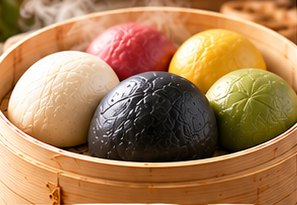
      <div class="body">
        <span class="tag">LINE 01 · 蒸製 · 流量品</span>
        <h3>饅頭</h3>
        <p>鬆軟綿密、天然色澤，最日常、回購率最高。</p>
        <ul><li>早餐點心、冷凍宅配</li><li>團購禮盒、餐飲通路</li></ul>
      </div>
    </article>
    <article class="line">
      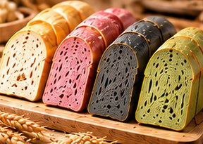
      <div class="body">
        <span class="tag">LINE 02 · 烘焙 · 形象品</span>
        <h3>麵包</h3>
        <p>柔軟香甜、色彩天然，櫃位上最吸睛。</p>
        <ul><li>門市現烤、下午茶甜點</li><li>伴手禮盒、產品差異化</li></ul>
      </div>
    </article>
    <article class="line">
      
      <div class="body">
        <span class="tag">LINE 03 · 鮮麵／乾麵 · 利潤品</span>
        <h3>麵條</h3>
        <p>Q 彈滑順、穀物風味，保存期長、適合零售。</p>
        <ul><li>餐飲料理、家庭料理</li><li>創意料理、多元應用</li></ul>
      </div>
    </article>
  </div>
  <div class="split">
    <div>
      <h3>為什麼是預拌粉，不是成品？</h3>
      <p style="margin-top:8px;text-align:justify">成品保存期短、配送半徑小、產能受限於人力。預拌粉配方已調好，客戶拿到就能做；粉體輕、保存久、運費低，能賣到任何有蒸箱、烤箱或製麵機的地方。品牌方專注配方與原料，生產交給各地客戶，等於把客戶變成分散式的工廠。</p>
    </div>
    <div class="box" style="margin-top:0">
      <h3>操作要點</h3>
      <ol>
        <li><b>先一種、再五種</b>：從黃、紅兩色切入。</li>
        <li><b>先一用、再三用</b>：有蒸箱先做饅頭，有烤箱先做吐司。</li>
        <li><b>附標準作業程序</b>：含水量、發酵時間、蒸烤條件寫成配方卡。</li>
        <li><b>五色組合陳列</b>：推「五色拼盤」、「五色組合包」拉高客單價。</li>
      </ol>
    </div>
  </div>
  <div class="folio"><span>案例解析 CASE STUDY</span><span class="pn">07</span></div>
</section>

<!-- P8 Six scenes -->
<section class="page" id="p8">
  <div class="kicker"><span>專題企劃</span><span>六大商業場景</span></div>
  <h2>賣同一包粉，<em>要講六種語言</em></h2>
  <p class="lede">小吃店在意客流，烘焙坊在意顏值，禮品採購在意體面，超市在意周轉，批發客在意穩定，異業夥伴在意新意。</p>
  <div class="scenes">
    <article class="scene">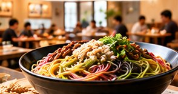<h3><span>1</span>餐飲店・小吃店</h3><span class="need">需求：吸引客流、區隔競爭</span><p>從「麵本身」做文章。五色拌麵端上桌，客人的第一個動作是拍照，招牌菜就是最便宜的廣告。</p></article>
    <article class="scene">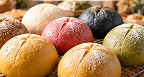<h3><span>2</span>烘焙坊・麵包店</h3><span class="need">需求：高顏值新品、節慶營收</span><p>五色吐司切面並列，是整個櫃位的視覺中心；「天然色彩」也是拉高定價的理由。</p></article>
    <article class="scene">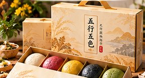<h3><span>3</span>伴手禮・禮盒市場</h3><span class="need">需求：精緻包裝、送禮體面</span><p>毛利最高的場景。春節、端午、中秋三節，加上婚嫁、壽宴、彌月，全年都有送禮需求。</p></article>
    <article class="scene">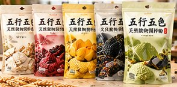<h3><span>4</span>超市・零售通路</h3><span class="need">需求：家庭常備、輕鬆料理</span><p>重點是讓家庭也做得出來：一家人一次用量的小包裝，附簡單食譜卡。</p></article>
    <article class="scene">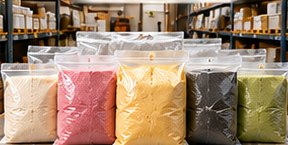<h3><span>5</span>批發・餐飲供應</h3><span class="need">需求：穩定供貨、品質一致</span><p>中央廚房、團膳、食品廠要的是大量與穩定，靠的是標準化配方與穩定的原料供應鏈。</p></article>
    <article class="scene">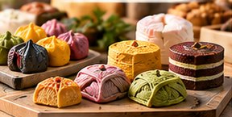<h3><span>6</span>創意研發・異業合作</h3><span class="need">需求：新品、跨界話題</span><p>品牌的放大器：與咖啡廳聯名五色蛋糕、與觀光工廠合作 DIY 體驗課程。</p></article>
  </div>
  <div class="box">
    <h3>場景對照：誰買、為什麼買</h3>
    <p>B2B 端（1、2、5、6）買的是差異化與穩定供貨，B2C 端（3、4）買的是方便與心意。同一套配方與品牌，前端依場景換一套說法。</p>
  </div>
  <div class="folio"><span>專題企劃 SPECIAL REPORT</span><span class="pn">08</span></div>
</section>

<!-- P9 Business model -->
<section class="page" id="p9">
  <div class="kicker"><span>專題企劃</span><span>商業模式與定價</span></div>
  <h2>根穩了，<em>枝葉可以自己長</em></h2>
  <p class="lede">陳辭修博士把五行五色的商業模式比喻成一棵樹：根是原料與配方，幹是五款預拌粉，枝是三條產品線，果實是六大場景的營收。</p>
  <div class="chain">
    <ol>
      <li><b>根｜原料與配方</b>約二十種天然穀物、標準化配方</li>
      <li><b>幹｜五款預拌粉</b>白、紅、黃、黑、綠</li>
      <li><b>枝｜三條產品線</b>饅頭、麵包、麵條</li>
      <li><b>果｜六大場景</b>餐飲、烘焙、禮盒、零售、批發、異業</li>
    </ol>
  </div>
  <div class="tbl">
    <table>
      <thead><tr><th>面向</th><th>B2B（企業客戶）</th><th>B2C（消費者）</th></tr></thead>
      <tbody>
        <tr><td class="el">客戶</td><td>餐飲、烘焙、中央廚房、食品廠、禮品商</td><td>家庭主廚、送禮族、健康飲食愛好者</td></tr>
        <tr><td class="el">主力商品</td><td>業務用大包裝預拌粉、代工與客製配方</td><td>小包裝預拌粉、五色乾麵、冷凍饅頭、禮盒</td></tr>
        <tr><td class="el">購買理由</td><td>穩定供貨、品質一致、差異化菜單</td><td>方便好做、風味多元、送禮體面</td></tr>
        <tr><td class="el">銷售方式</td><td>業務拜訪、食品展、經銷商、試做說明會</td><td>電商、社群團購、實體門市、節慶預購</td></tr>
        <tr><td class="el">關鍵指標</td><td>回購週期、客戶留存率、單客年採購量</td><td>客單價、回購率、節慶與平日營收比</td></tr>
      </tbody>
    </table>
  </div>
  <h3 style="margin-top:30px">定價的三層架構</h3>
  <div class="tiers">
    <div><span class="lv">TIER I</span><h3>業務用粉</h3><p>以重量計價、數量階梯優惠。一個五色饅頭增加的原料成本，必須遠低於它帶來的售價提升。</p></div>
    <div><span class="lv">TIER II</span><h3>零售包裝</h3><p>以一家人一次用量設計，附食譜卡；用「五色組合包」拉高客單價。</p></div>
    <div><span class="lv">TIER III</span><h3>節慶禮盒</h3><p>定價看送禮預算帶，不看成本。包裝、故事、設計都是價值，毛利最高。</p></div>
  </div>
  <div class="split">
    <figure class="fig">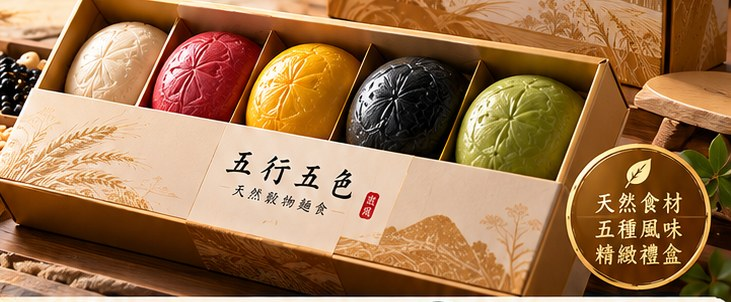<figcaption><b>先禮盒</b>預購決定產量，現金流健康，也最快建立形象。</figcaption></figure>
    <div>
      <h3>通路布局的順序</h3>
      <p style="margin-top:8px;font-family:var(--f-display);font-weight:700;color:var(--red)">先 B2B、後 B2C；先禮盒、後日常。</p>
      <p style="margin-top:8px;text-align:justify">一家麵包店每週穩定進貨，勝過上百個零散消費者，企業客戶也是最好的展示櫥窗。品牌知名度建立後，再進入超市與電商的日常家庭市場，用回購穩定營收。</p>
    </div>
  </div>
  <div class="folio"><span>專題企劃 SPECIAL REPORT</span><span class="pn">09</span></div>
</section>

<!-- P10 Compliance -->
<section class="page" id="p10">
  <div class="kicker"><span>菁英觀點</span><span>法規誠信</span></div>
  <h2>養生<em>不等於</em>功效</h2>
  <p class="lede">「養生產品最大的風險，不是賣不好，而是賣太好時被檢舉。」五行五色可以講文化、講原料、講風味，但不講療效。</p>
  <div class="warm">
    <b>溫馨提醒</b>
    <p>本產品僅描述原料與風味，不涉及任何功效宣傳。原料資格、食品標示及使用方式，須依銷售地相關法規確認。</p>
  </div>
  <p style="margin-top:22px;text-align:justify">以台灣為例，《食品安全衛生管理法》禁止食品標示、宣傳或廣告有不實、誇張、易生誤解或涉及醫療效能之情形；若要宣稱特定保健功效，須依《健康食品管理法》取得許可。各地規定不同，實際用語請以主管機關最新公告為準，必要時請教專業法規顧問。</p>
  <div class="dodont">
    <div class="ok"><h3>可以這樣說（描述事實）</h3>
      <ul><li>天然食材、自然色澤</li><li>四神風味、溫潤穀香</li><li>五紅風味、清甜爽口</li><li>五黑風味、濃郁穀香</li><li>不添加人工色素</li><li>五種顏色，讓飲食更多元</li></ul>
    </div>
    <div class="no"><h3>避免這樣說（功效暗示）</h3>
      <ul><li>排毒、清血、改善體質</li><li>健脾、補氣、調理腸胃</li><li>補血、養顏、改善氣色</li><li>烏髮、補腎、抗老</li><li>防癌、降血糖、降血壓</li><li>依五行體質食用可調理臟腑</li></ul>
    </div>
  </div>
  <h3 style="margin-top:30px">合規的五項基本功</h3>
  <div class="tbl">
    <table>
      <thead><tr><th>項目</th><th>做法</th></tr></thead>
      <tbody>
        <tr><td class="el">原料資格</td><td>逐項確認可作為食品原料，特別是食藥兩用類原料的使用部位與限量。</td></tr>
        <tr><td class="el">標示完整</td><td>品名、內容物（依含量排列）、淨重、過敏原、營養標示、有效日期、廠商資訊、原產地。</td></tr>
        <tr><td class="el">品名不誤導</td><td>「南瓜穀物風味」的「風味」二字需與實際原料含量相符。</td></tr>
        <tr><td class="el">通路文宣一致</td><td>經銷商或團購主自行加上功效語句，風險同樣由品牌承擔；提供統一素材與用語清單。</td></tr>
        <tr><td class="el">外銷前先查</td><td>港澳、大陸、東南亞、歐美對原料與標示規定各不相同，需逐一確認。</td></tr>
      </tbody>
    </table>
  </div>
  <blockquote class="pull">「合規不是綁手綁腳，<br>而是讓你的客戶敢放心幫你賣。」<cite>— 陳辭修 博士</cite></blockquote>
  <div class="folio"><span>菁英觀點 EDITOR'S VIEW</span><span class="pn">10</span></div>
</section>

<!-- P11 Interview 2 -->
<section class="page" id="p11">
  <div class="kicker"><span>菁英專訪</span><span>給經營者的建言</span></div>
  <h2>先把一個饅頭<em>做對</em></h2>
  <p class="lede">護城河、色差、設廠與異業合作。陳辭修博士談把五行五色做成長久生意的關鍵決定。</p>
  <div class="rule-gold"></div>
  <div class="qa">
    <div><p class="q">預拌粉競爭者很多，五行五色的護城河是什麼？</p>
    <p class="a">三層。第一層是<strong>配方</strong>，天然原料要做到色澤穩定、口感一致並不容易；第二層是<strong>系統</strong>，一粉三用加上配方卡與教學，客戶的學習成本就是轉換成本；第三層是<strong>品牌</strong>，消費者想到五色饅頭就想到你，競爭者再便宜也難取代。</p></div>
    <div><p class="q">天然原料的色差怎麼處理？</p>
    <p class="a">先跟客戶說清楚：天然就會有些微色差，這是不加人工色素的證據。品牌內部則用標準色卡與批次檢驗控制在可接受範圍。<strong>對外坦誠，對內嚴格。</strong></p></div>
    <div><p class="q">要自己設廠，還是找代工？</p>
    <p class="a">初期找具備食品安全驗證的代工廠，品牌方掌握配方、原料規格與品管標準。等出貨量穩定、毛利撐得住，再評估自建產線。不要用工廠的重資產，去賭一個還沒驗證的市場。</p></div>
    <div><p class="q">異業合作從哪裡開始？</p>
    <p class="a">從「對方已經有客人、但缺新品」的夥伴開始：咖啡廳需要季節新品，觀光工廠需要 DIY 體驗，學校需要食農教育教材。我們提供粉與配方，對方提供場景與客人。</p></div>
    <div><p class="q">五行五色下一步怎麼走？</p>
    <p class="a">三個方向：產品延伸到水餃皮、湯圓、鬆餅；場景延伸到體驗課程與食農教育；市場延伸到海外華人社群，把這套共通的文化語言帶出去。</p></div>
  </div>
  <div class="advice">
    <h3>讀者行動清單</h3>
    <ul class="check">
      <li>盤點店裡的蒸箱、烤箱、製麵機，找出「一粉三用」中最容易開始的一用。</li>
      <li>選一至兩種風味（建議黃·土或紅·火）試做與試吃。</li>
      <li>算一筆帳：增加的原料成本、可提高的售價與預估增加的來客。</li>
      <li>規劃一個節慶檔期的五色禮盒或組合包，用預購測試市場。</li>
      <li>檢查現有文宣與菜單，刪除可能被視為功效宣稱的字句。</li>
    </ul>
  </div>
  <div class="folio"><span>菁英專訪 INTERVIEW · 下</span><span class="pn">11</span></div>
</section>

<!-- P12 Back -->
<section class="page back" id="p12">
  <div class="kicker"><span>編輯部</span><span style="color:var(--gold-soft);border-color:var(--gold-soft)">EDITOR'S VIEW</span></div>
  <h2>讓天然穀物走進日常餐桌</h2>
  <p class="lede">從一粒赤小豆、一塊南瓜、一片昆布開始，用五行命名，用一粉三用找到出路，用六大場景打開市場，再用不談功效守住底線。這是一個文化底蘊、產品設計、通路策略與合規意識缺一不可的商業案例。</p>
  <figure class="fig" style="margin-top:26px">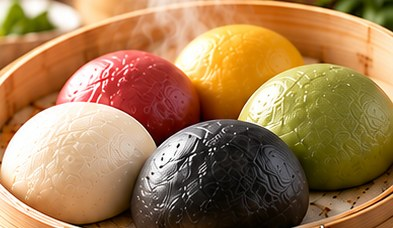</figure>
  <div class="next">
    <div><b>下期預告</b><p>No.003〈30 年老店 玉欣珍〉：道地台灣味，美食新饗受。</p></div>
    <div><b>企業專訪邀約</b><p>歡迎產業先進推薦受訪對象，分享轉型與創新經驗。</p></div>
    <div><b>訂閱電子報</b><p>不定期出刊，掌握產業趨勢、菁英專訪與案例解析。</p></div>
  </div>
  <p class="masthead-mini"><small>BUSINESS ELITE E-NEWSLETTER</small>商業菁英</p>
  <div class="colophon">
    <span>2026 年 10 月 · No.002</span>
    <span>掌握趨勢 · 連結產業 · 成就菁英</span>
    <span>發行：商業菁英編輯部</span>
    <span>聯絡信箱：luisun888@gmail.com</span>
  </div>
  <p class="disclaimer">本刊提及之產品僅描述原料與風味，不涉及任何功效宣傳，亦不具醫療效能。文中法規資訊為一般性說明，實際應用請以銷售地主管機關最新規定為準。</p>
  <div class="folio"><span>商業菁英 BUSINESS ELITE</span><span class="pn">12</span></div>
</section>

</main>
